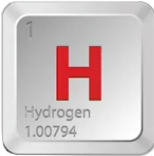
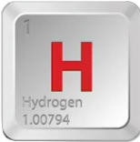

سوتی های قرآن زیر ذرهبین علم
# ادعا 1
# جواب 1
در سال 1990 میلادی لوبرت استرایر استاد دانشگاه آکسفورد در کتاب معروف خودش به نام بیو شیمی میگه :

99 درصد از جرم بدن انسان از هشت عنصر
اکسیژن ، کربن ، هیدروژن ، نیتروژن ، کلسیم ، سدیم ، پتاسیم و فسفر تشکیل شده


و در سال 1995 دکتر دونالد ال اسپارکس در کتاب معروف خودش به نام شیمی خاک با نگرش زیست محیطی میگه :

عناصر عمده تشکیل دهنده خاک عبارتند از :
اکسیژن ، کربن ، هیدروژن ، نیتروژن ، کلسیم ، سدیم ، پتاسیم و منیزیمه تشکیل شده
 



به راستی شباهت 99 درصدی عناصر تشکیل دهنده بدن انسان و گل که مخلوط آب و خاکه دلیل بر صدق ادعای خداوند نیست که میگه شمارا از گل خلق کردیم ؟
# ادعا 2
# جواب 2
آنتونی فان لیوونهوک دانشمند هلندی که به او پدر علم میکروب شناسی داده اند

در سال 1677 میلادی کشف میکنه که برای باروری نیاز به ترکیب اسپرم مرد و تخمک زنه
تا قبل از اون مردم فکر میکردند جنین فقط از مایع منی مرد یا از خون قاعدگی زن تشکیل میشه
اما قرآن هزار سال قبل از اون در آیه 13 سوره مومنون به نطفه یعنی ترکیب اسپرم مرد و تخمک زن اشاره میکنه
در سال 1956 دکتر آرتور هرتیگ استاد دانشگاه هاروارد و همکارش جان راک
موفق شدند اولین تصاویر میکروسکوپی از لانه گزینی جنین انسان رو ثبت کنند
و همچنین کشف میکنه که جنین بین 5 تا 7 روز بعد از لقاح به دیواره رحم میچسبه و از خون مادر تغذیه میکنه
اما قرآن 1400 سال قبل از این کشف این مرحله رو علقه یعنی چیز چسبیده و آویزان نامیده مثل زالو که به پوست میچسبه و از خون تغذیه میکنه

در حالی که علم پزشکی تا قرن بیستم نمیدونست جنین چطور به رحم میچسبه
و در سال 1890 میلادی ویلهلم هیس دانشمند علوم جنین شناسی
با کمک میکروسکوپ کشف میکنه که جنین در هفته های 4 تا 6 بارداری شبیه به توده ای نا منظم مثل گوشت جویده شده است
اما قرآن 1200 سال قبل از هیس در آیه 14 سوره مومنون جنین را در این مرحله مضغه نامیده یعنی گوشت جویده شده است


این شواهد نشون میده که قرآن نه ساخته بشر بلکه از سوی خالقی آگاهه که بر همه جزئیات علم تسلط داره همینطور که خداوند
در آیه 53 سوره فصلت میگه :